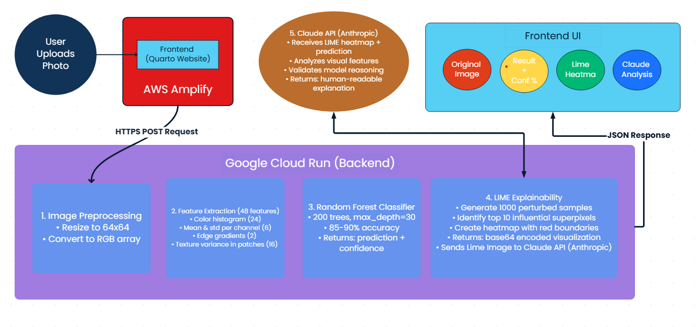

Wrecked Car Detector
ML-Powered Wrecked Car Detector
Upload or take a photo of a car, and our AI will analyze whether it’s damaged using advanced machine learning and explainable AI techniques.
📸 Upload Car Image
Accepts JPG and PNG formats
🚗 How This Project Was Built
This car crash detector was built using a modern tech stack combining machine learning, explainable AI, and cloud infrastructure:
System Architecture & Workflow

Frontend & Hosting:
- Built with Quarto - a scientific publishing system that converts Markdown to beautiful HTML
- Hosted on AWS Amplify with automatic deployments from GitHub
- Responsive design for desktop and mobile viewing
Machine Learning Pipeline:
- Random Forest Classifier trained on 5,000 car images
- Achieves ~85-90% accuracy in detecting vehicle damage
- Extracts 48 features: color histograms, edge gradients, and texture patterns
- Model size: 9.3 MB, inference time: <1 second
Explainability Layer:
- LIME (Local Interpretable Model-agnostic Explanations) generates visual explanations
- Highlights image regions that most influenced the AI’s decision
- Red boundaries show what the model was “looking at” when making predictions
AI Analysis:
- Claude API (Anthropic) analyzes the LIME visualization
- Provides human-readable explanations of the model’s reasoning
- Validates predictions and identifies potential issues
Backend Infrastructure:
- Deployed on Google Cloud Run (serverless container platform)
- Handles image preprocessing, prediction, and LIME generation
- Auto-scales based on demand with 2GB memory, 2 CPU cores
Complete workflow: User uploads image → Cloud Run processes → Random Forest predicts → LIME explains → Claude analyzes → Results displayed with visual heatmap and AI commentary.